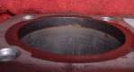

All engines use a little oil. If you need to top up often and there is no puddle, the oil is probably burning in the cylinder (past worn rings or valve guides), escaping through the breather into the air box, or leaking only while riding and blowing away. Measure how fast it goes before deciding: a record of top-ups against distance is the best evidence. On two-stroke bikes with oil injection, the oil tank level is meant to fall; that is normal.
Is it safe to ride?
Yes, if you keep the level between the marks and check it often. Do not let it fall below the lower mark.
Quick checks first
- Was the level checked the same way each time (upright, level, settled)?
- Any blue smoke, especially on acceleration or after idling?
- Is the spark plug wet with oil?
- Is the air box drain or air filter oily?
Diagnose it step by step
1Are you reading the level correctly? Use Check the engine oil level every time and write down level, distance and how much you add.
- After a few weeks the level is steady: it was a reading error. Done.
- It really falls: go to step 2.
2Two-stroke with oil injection: is it the oil tank that falls?
- Yes: that is normal use. If the tank does not fall at all, see Two-stroke oil tank level is not going down.
- Four-stroke: go to step 3.
3After a ride, look for oil on the underside of the engine, the chain, the swingarm and the rear of the bike. Use powder with Trace an oil leak. Any wet trail?
- Yes: it is a leak that blows away while riding. Follow that page.
- No: go to step 4.
4Is oil coming out of the breather or collecting in the air box?
- Yes: check with Check the crankcase breather. Heavy blow-by points to worn rings.
- No: go to step 5.
5Is there blue smoke? Check with Diagnose exhaust smoke by colour.
- Yes: go to Blue or grey smoke from the exhaust.
- No visible smoke: go to step 6.
6Do Test engine compression. Low, rising wet?
- Yes: worn rings. Go to Assess the top end (cylinder, piston, valves).
- Normal: valve stem seals or guides are likely. Same workshop job. On a liquid-cooled engine, also check the coolant for oil with Check and top up coolant.
Causes, most likely first
| Cause | How to confirm | Fix |
|---|---|---|
| Wrong reading method | Records vary | Check the engine oil level |
| Engine settling at its own level | Level drops a little after a fill, then stays steady over several checks | Check often; keep it between the marks |
| Leak blown away while riding | Wet trail after a ride | Trace an oil leak |
| Breather discharge | Oil in air box | Check the crankcase breather |
| Worn rings | Blue smoke on load, low compression | Assess the top end (cylinder, piston, valves) |
| Valve stem seals or guides | Smoke after idling, normal compression | Assess the top end (cylinder, piston, valves) |